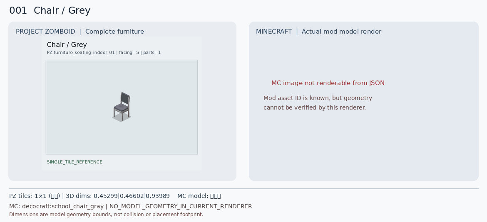

Chair / Grey
좀보이드: 1×1 (임시) 칸 / 조각 1개 / 3D 추정 폭·깊이·높이 0.45299|0.46602|0.93989
마크: decocraft / decocraft:school_chair_gray / 모델 경계치 미측정
방향: S | 마크 블록 상태: facing=east/north/south/west
상태: NO_MODEL_GEOMETRY_IN_CURRENT_RENDERER | 원본 타일 속성: BlocksPlacement=, CanScrap=, CustomName=Chair, Facing=S, GroupName=Grey, IsLow=, IsMoveAble=, Material=MetalScrap, MaterialType=Metal_Light, bed=
전체 원본 속성·모델 근거 보기
{
"pz": {
"BedType": [
"badBed"
],
"BlocksPlacement": [
""
],
"CanScrap": [
""
],
"CustomName": [
"Chair"
],
"Facing": [
"S"
],
"GroupName": [
"Grey"
],
"IsLow": [
""
],
"IsMoveAble": [
""
],
"Material": [
"MetalScrap"
],
"Material2": [
"PlasticHard"
],
"MaterialType": [
"Metal_Light"
],
"PickUpWeight": [
"75"
],
"ScrapSize": [
"Small"
],
"SeatMaterial": [
"Metal"
],
"Surface": [
"17"
],
"bed": [
""
],
"chairS": [
""
]
},
"mc": {
"blockstate_multipart_cases": 0,
"blockstate_variants": 4,
"missing_geometry": [
"no_element_geometry:decocraft:school_chair_gray"
],
"model_sources": [
"assets/decocraft/models/school_chair_gray.json"
],
"possible_blockstate_properties": {
"facing": [
"east",
"north",
"south",
"west"
]
},
"sample_model_references": [
"decocraft:school_chair_gray"
],
"texture_sources": []
},
"shape": "NO_MODEL_GEOMETRY_IN_CURRENT_RENDERER",
"source_tiled_ids": "furniture_seating_indoor_01/54"
}